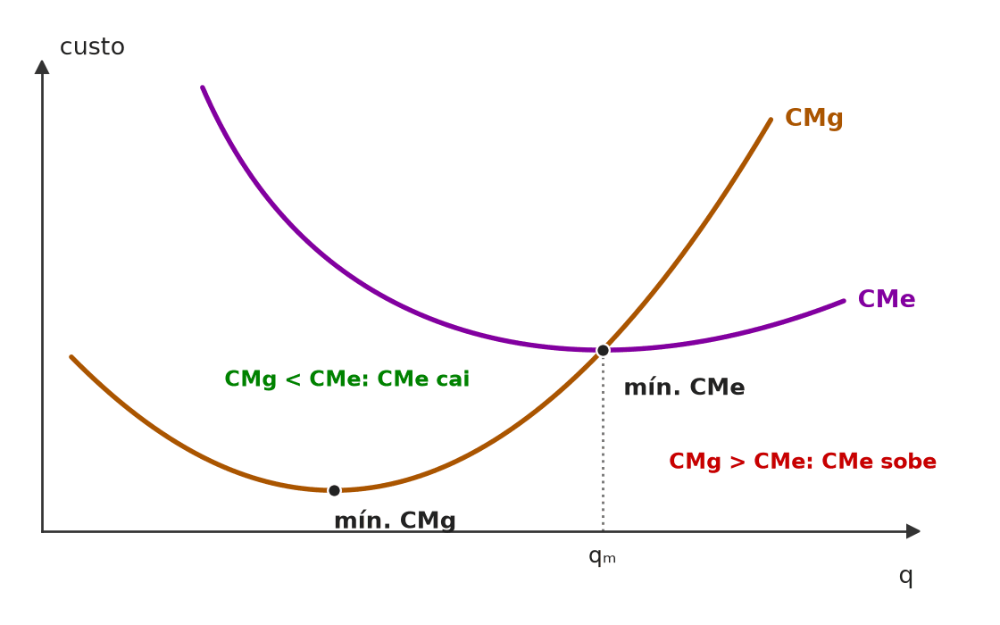
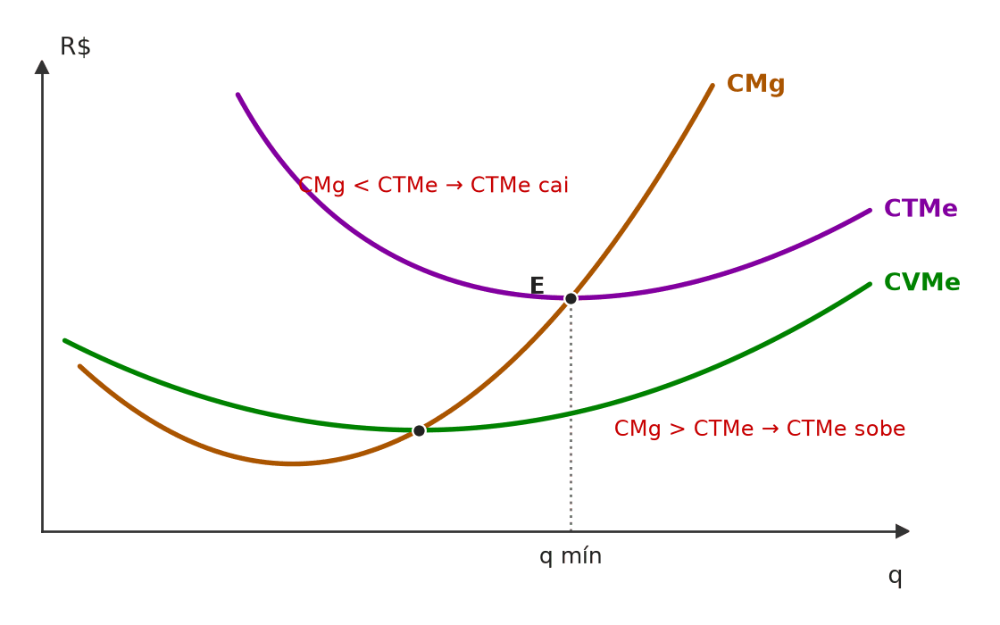
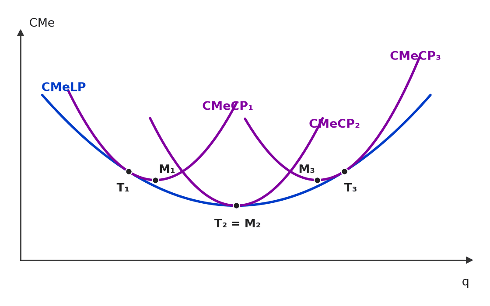
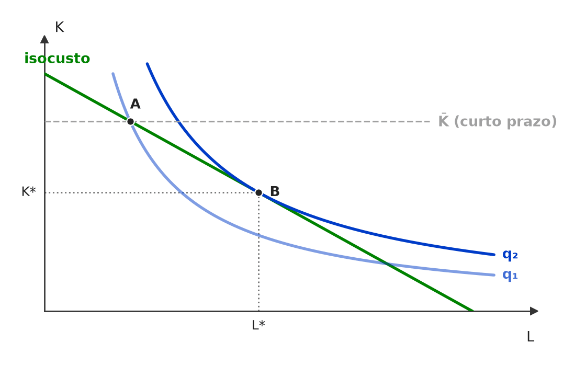
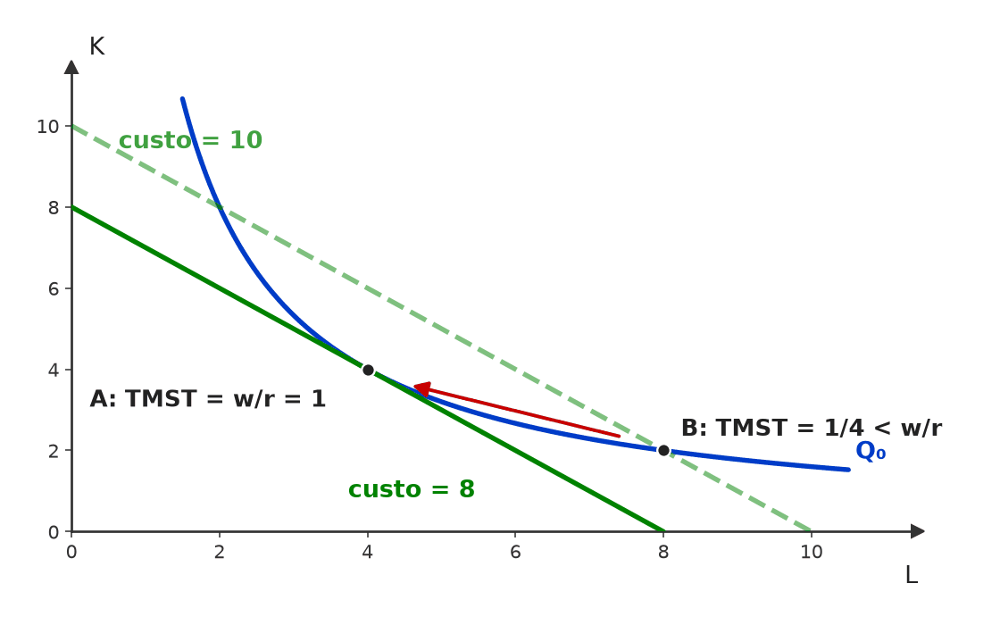
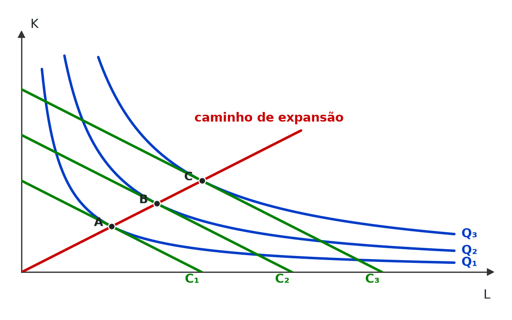
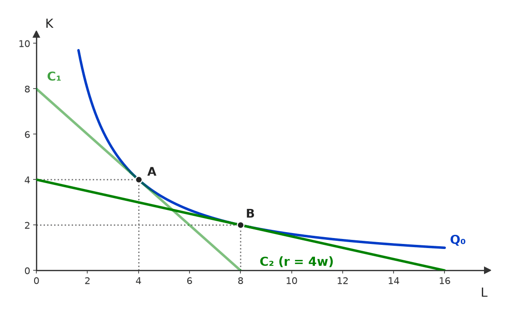

[C/E - IDEG – Prof. Bozan › Pré-TPS/2026 › Custos de curto prazo]Julgue o item a seguir, sobre a aplicação da análise de custos e receitas em mercados. Item: O custo marginal é sempre inferior ao custo médio em todos os pontos de produção, o que implica que o custo médio continuará a cair conforme o volume de produção aumenta. Este fenômeno ocorre devido à capacidade das empresas de diluir seus custos fixos proporcionalmente à quantidade produzida, garantindo que a média de custos seja constantemente reduzida à medida que a produção se expande. | ❌ ERRADO O custo marginal é sempre inferior ao custo médio em todos os pontos de produção, o que implica que o custo médio continuará a cair conforme o volume de produção aumenta. Este fenômeno ocorre devido à capacidade das empresas de diluir seus custos fixos proporcionalmente à quantidade produzida, garantindo que a média de custos seja constantemente reduzida à medida que a produção se expande. 🎯 Em poucas palavras: No curto prazo o custo médio tem formato de U: a diluição do custo fixo o puxa para baixo, mas os rendimentos decrescentes acabam puxando-o para cima. Depois do mínimo, CMg > CMe. 📖 Destrinchando o tema:
🧐 Dissecando a redação do item: [modulador absoluto · meia-verdade] O item embrulha um fato verdadeiro (a diluição do custo fixo) em generalizações: “sempre”, “em todos os pontos”, “continuará”, “constantemente”. Excesso de absolutos num item de custos é sinal forte de ERRADO. 😈 Para dificultar:
✍️ Reescrita correta: O custo marginal fica abaixo do custo médio apenas até o ponto mínimo deste, o que implica que o custo médio cai até esse ponto e depois sobe. Este fenômeno ocorre devido à capacidade das empresas de diluir seus custos fixos proporcionalmente à quantidade produzida, efeito que acaba superado pelos rendimentos decrescentes, que fazem o custo médio voltar a subir. |
[C/E - IDEG – Prof. Bozan › Pré-TPS/2026 › Custos de curto prazo]Julgue o item a seguir, sobre a aplicação da análise de custos e receitas em mercados. Item: A curva de custo variável médio tende a se aproximar da curva de custo total médio conforme a produção aumenta, devido à diluição do custo marginal. | ❌ ERRADO A curva de custo variável médio tende a se aproximar da curva de custo total médio conforme a produção aumenta, devido à diluição do custo marginal. 🎯 Em poucas palavras: A distância entre CTMe e CVMe é o custo fixo médio (CF/q), que encolhe quando q cresce. O que se dilui é o custo fixo; o marginal não se dilui. 📖 Destrinchando o tema:
🧐 Dissecando a redação do item: [troca de conceito] Uma palavra trocada: “marginal” no lugar de “fixo”. O resto do item (as curvas se aproximam) está certo, o que induz o CERTO na leitura rápida. 😈 Para dificultar:
✍️ Reescrita correta: A curva de custo variável médio tende a se aproximar da curva de custo total médio conforme a produção aumenta, devido à diluição do custo fixo. |
[C/E - Nabuco › Custos de curto prazo]Em relação às estruturas de mercado, julgue (C ou E) o item a seguir. Item: A concorrência perfeita e o monopólio são duas estruturas de mercado consideradas opostas em vários aspectos, todavia há pontos em comum na análise do comportamento da firma em um ambiente de concorrência perfeita e em um ambiente monopolista. Considerando firmas que produzem um único produto com custos marginais convexos, tanto no ambiente de concorrência perfeita quanto no monopólio, se o custo marginal se iguala ao custo médio, então a produção tem o menor custo médio possível. | ✅ CERTO A concorrência perfeita e o monopólio são duas estruturas de mercado consideradas opostas em vários aspectos, todavia há pontos em comum na análise do comportamento da firma em um ambiente de concorrência perfeita e em um ambiente monopolista. Considerando firmas que produzem um único produto com custos marginais convexos, tanto no ambiente de concorrência perfeita quanto no monopólio, se o custo marginal se iguala ao custo médio, então a produção tem o menor custo médio possível. 🎯 Em poucas palavras: CMg = CMe ocorre no mínimo do custo médio por uma propriedade matemática da função de custo. A estrutura de mercado não entra na conta: ela só decide se a firma produz ou não nesse ponto. 📖 Destrinchando o tema:
🧐 Dissecando a redação do item: [contraintuitivo] O preâmbulo sobre estruturas “opostas” sugere que a resposta depende do mercado. Não depende: a relação marginal × média é propriedade dos custos. Pista: o “tanto… quanto” está protegido pelo “se… então”. 😈 Para dificultar:
|
[C/E - Nidi/Jacqueline Bueno › Simulado Dezembro/2024 › Custos de curto prazo]Considerando a teoria da produção e suas implicações para o equilíbrio de curto e longo prazo para empresas competitivas, julgue (C ou E) o item a seguir. Item: Um custo marginal decrescente provoca uma redução no custo médio total de produção. Isso ocorre porque as novas unidades produzidas geram acréscimos no custo total menores do que as unidades anteriormente produzidas, reduzindo o custo médio total. | ✅ CERTO Um custo marginal decrescente provoca uma redução no custo médio total de produção. Isso ocorre porque as novas unidades produzidas geram acréscimos no custo total menores do que as unidades anteriormente produzidas, reduzindo o custo médio total. 🎯 Em poucas palavras: Na curva de custos típica, o trecho em que o CMg cai fica todo abaixo do CMe: cada unidade nova custa menos que a média e a puxa para baixo. 📖 Destrinchando o tema:
📈 No gráfico:  Enquanto o CMg cai, ele está abaixo do CMe e puxa a média para baixo. Depois do seu mínimo, o CMg já sobe, mas, enquanto continua abaixo do CMe, a média ainda cai; só no cruzamento (mínimo do CMe) a média para de cair e passa a subir. 🧐 Dissecando a redação do item: [paráfrase fiel · detalhe] O item é correto dentro da curva-padrão, e a justificativa reproduz o mecanismo da média. A armadilha está no candidato que lembra a ressalva “o que importa é CMg < CMe” e julga o item incompleto. 🔥 A versão ERRADA clássica é a inversa: “CMg crescente implica CMe crescente”. 😈 Para dificultar:
|
[C/E - FEPESE › Celesc/Economista/2019 › Custos de curto prazo]Julgue o item a seguir, relativo aos custos de produção da firma (questão adaptada). Item: O custo fixo médio apresenta a mesma magnitude para qualquer quantidade produzida pela firma. | ❌ ERRADO O custo fixo médio apresenta a mesma magnitude para qualquer quantidade produzida pela firma. 🎯 Em poucas palavras: Constante é o custo fixo total. O custo fixo médio = CF/q diminui à medida que a produção aumenta: o mesmo CF se reparte por mais unidades. 📖 Destrinchando o tema:
🧐 Dissecando a redação do item: [troca de conceito] A propriedade do custo fixo total (constância) foi atribuída ao custo fixo médio. Pista: “médio” significa dividido por q — se q muda, ele muda. 😈 Para dificultar:
✍️ Reescrita correta: O custo fixo médio diminui à medida que aumenta a quantidade produzida pela firma. |
[C/E - Prof. Rodrigo Teixeira › Custos de curto prazo]A respeito da teoria da firma, julgue o item a seguir. Item: Se o produto marginal do trabalho for decrescente, então o custo marginal será crescente. | ✅ CERTO Se o produto marginal do trabalho for decrescente, então o custo marginal será crescente. 🎯 Em poucas palavras: Com salário dado e trabalho como fator variável, CMg = w/PMgL: se cada trabalhador extra produz menos, cada unidade extra exige mais horas e custa mais. 📖 Destrinchando o tema:
🧐 Dissecando a redação do item: [literalidade] Relação-padrão de dualidade, enunciada como condicional (“se… então”). O candidato hesita porque “decrescente” e “crescente” parecem contraditórios; é justamente essa oposição que está certa. 😈 Para dificultar:
|
[C/E - Prof. Rodrigo Teixeira › Custos de curto prazo]A respeito da teoria da firma, julgue o item a seguir. Item: Se o custo marginal estiver acima do custo total médio, então este último está diminuindo. | ❌ ERRADO Se o custo marginal estiver acima do custo total médio, então este último está diminuindo. 🎯 Em poucas palavras: Se a unidade extra custa mais que a média, ela puxa a média para cima: com CMg > CTMe, o CTMe está aumentando. 📖 Destrinchando o tema:
📈 No gráfico:  À esquerda de E, CMg < CTMe e a média cai; à direita, CMg > CTMe e a média sobe. O CMg corta o CVMe e o CTMe em seus pontos mínimos. 🧐 Dissecando a redação do item: [inversão] O item inverte a relação marginal × média. Quem guarda só a imagem do CMg “cortando” o CTMe, sem saber de que lado está cada trecho, cai. Pista: “acima” ↔ “aumentando”. 😈 Para dificultar:
✍️ Reescrita correta: Se o custo marginal estiver acima do custo total médio, então este último está aumentando. |
[C/E - Nabuco › Custos de curto prazo]Em relação às estruturas de mercado, julgue (C ou E) o item que se segue. Item: Tanto no ambiente de concorrência perfeita quanto no monopólio, se o custo marginal se iguala ao custo médio, então a produção tem o menor custo médio possível. | ✅ CERTO Tanto no ambiente de concorrência perfeita quanto no monopólio, se o custo marginal se iguala ao custo médio, então a produção tem o menor custo médio possível. 🎯 Em poucas palavras: O CMg cruza o CMe no ponto mínimo deste em qualquer estrutura de mercado: é propriedade da função de custo, não da demanda nem do preço. 📖 Destrinchando o tema:
🧐 Dissecando a redação do item: [contraintuitivo] A menção ao monopólio induz a pensar que, com poder de mercado, a regra mudaria. Não muda: o item fala de custos, e a relação marginal × média é geométrica. 😈 Para dificultar:
|
❌ [C/E - CEBRASPE › TJ/PA/2025 › Custos de longo prazo e escala]Julgue o item a seguir, a respeito de determinação das curvas de procura, elasticidade, produtividade e custos de produção. Item: Uma empresa pode ter economias de escala ao mudar sua tecnologia ou combinação de insumos, mesmo que seu processo produtivo demonstre rendimentos constantes. | ✅ CERTO Uma empresa pode ter economias de escala ao mudar sua tecnologia ou combinação de insumos, mesmo que seu processo produtivo demonstre rendimentos constantes. 🎯 Em poucas palavras: Rendimentos de escala são conceito técnico (insumos × produto, na mesma proporção); economias de escala são conceito de custo (CMe de longo prazo caindo). Mudar a proporção dos insumos ou a tecnologia pode baixar o CMe mesmo com rendimentos constantes. 📖 Destrinchando o tema:
🧐 Dissecando a redação do item: [contraintuitivo · modulador relativo] O item aposta em quem trata os dois conceitos como sinônimos (“rendimentos constantes ⇒ não há economia de escala”) e marca ERRADO. A pista está em “ao mudar sua tecnologia ou combinação de insumos”: a mudança tira a análise do terreno dos rendimentos de escala, que pressupõem proporções fixas. 🔥 CEBRASPE gosta de cobrar a distinção físico × custo. 😈 Para dificultar:
|
[C/E - CEBRASPE › TJ/PA/2025 › Custos de longo prazo e escala]Julgue o item a seguir, a respeito de determinação das curvas de procura, elasticidade, produtividade e custos de produção. Item: A curva de custo médio no longo prazo apresenta formato em U, em função da rigidez na alocação dos fatores de produção e de rendimentos decrescentes de escala. | ❌ ERRADO A curva de custo médio no longo prazo apresenta formato em U, em função da rigidez na alocação dos fatores de produção e de rendimentos decrescentes de escala. 🎯 Em poucas palavras: No longo prazo não há fator fixo: o U do CMe de longo prazo vem de economias de escala (trecho que desce) seguidas de deseconomias de escala (trecho que sobe). Rigidez de fatores explica o U do curto prazo. 📖 Destrinchando o tema:
🧐 Dissecando a redação do item: [troca de conceito · anacronismo] O item empresta a explicação do curto prazo (rigidez de fatores) e a cola no longo prazo — um “anacronismo” de horizonte temporal. A expressão “rendimentos decrescentes de escala” soa técnica e distrai; a palavra que entrega o erro é rigidez. 🔥 Banca adora trocar as causas do U de curto e de longo prazo. 😈 Para dificultar:
✍️ Reescrita correta: A curva de custo médio no longo prazo apresenta formato em U, em função de economias de escala em níveis baixos de produção e de deseconomias de escala em níveis elevados. |
[C/E - IDEG – Prof. Bozan › Pré-TPS/2026 › Custos de longo prazo e escala]Julgue o item a seguir, sobre a aplicação da análise de custos e receitas em mercados. Item: No longo prazo, o custo fixo já não é relevante para a análise de custos, pois ele está diluído pela produção intensiva. Além disso, a longo prazo, os rendimentos de escala, sejam crescentes, decrescentes ou constantes, influenciam significativamente a modelagem dos custos da empresa, permitindo maior flexibilidade e adaptação conforme a estrutura de produção se estabiliza. | ✅ CERTO No longo prazo, o custo fixo já não é relevante para a análise de custos, pois ele está diluído pela produção intensiva. Além disso, a longo prazo, os rendimentos de escala, sejam crescentes, decrescentes ou constantes, influenciam significativamente a modelagem dos custos da empresa, permitindo maior flexibilidade e adaptação conforme a estrutura de produção se estabiliza. 🎯 Em poucas palavras: As duas conclusões valem: no longo prazo não há custo fixo, e a escala molda a curva de custo médio. Mas a justificativa está errada — não há custo fixo porque todos os fatores são variáveis, não porque ele “se diluiu”. ⚠️ Gabarito contestável: o gabarito do simulado é CERTO, mas a oração causal “pois ele está diluído pela produção intensiva” é falsa: a diluição (CFMe = CF/q cada vez menor) é fenômeno de curto prazo e nunca zera o custo fixo. Numa banca rigorosa como o CEBRASPE, a justificativa errada tenderia a tornar o item ERRADO, resposta que parece mais defensável. 📖 Destrinchando o tema:
🧐 Dissecando a redação do item: [detalhe] A segunda frase é genérica e verdadeira; o ponto sensível é o conectivo causal “pois”, que amarra a conclusão certa a uma causa errada. Sempre teste a oração explicativa separadamente. 😈 Para dificultar:
|
[C/E - Armstrong › Pré-TPS/2026 › Custos de longo prazo e escala]Julgue o item a seguir, relativo às curvas de custo de longo prazo. Item: A curva de Custo Médio de Longo Prazo (CMeLP) é formada pelo envelope inferior das curvas de Custo Médio de Curto Prazo (CMeCP). Geometricamente, a CMeLP tangencia o ponto mínimo de cada curva de CMeCP, independentemente do tipo de rendimentos de escala que a firma apresente. | ❌ ERRADO A curva de Custo Médio de Longo Prazo (CMeLP) é formada pelo envelope inferior das curvas de Custo Médio de Curto Prazo (CMeCP). Geometricamente, a CMeLP tangencia o ponto mínimo de cada curva de CMeCP, independentemente do tipo de rendimentos de escala que a firma apresente. 🎯 Em poucas palavras: A envoltória está certa, mas a tangência só ocorre no mínimo da CMeCP onde há rendimentos constantes (fundo da CMeLP). Com economias de escala, ela fica no trecho descendente da CMeCP; com deseconomias, no ascendente. 📖 Destrinchando o tema:
📈 No gráfico:  A CMeLP envolve as curvas de curto prazo por baixo, mas só toca o MÍNIMO de uma delas onde ela própria é mínima (T₂). No trecho de economias de escala, a tangência T₁ fica à esquerda do mínimo M₁; no de deseconomias, T₃ fica à direita de M₃. 🧐 Dissecando a redação do item: [meia-verdade · modulador absoluto] A 1ª frase (envoltória) é de manual; o erro foi enxertado na 2ª, com o absoluto “independentemente do tipo de rendimentos de escala”. 🔥 É o “erro de Viner”, clássico em provas de micro. 📚 Autores e teses:
😈 Para dificultar:
✍️ Reescrita correta: A curva de Custo Médio de Longo Prazo (CMeLP) é formada pelo envelope inferior das curvas de Custo Médio de Curto Prazo (CMeCP). Geometricamente, a CMeLP tangencia cada curva de CMeCP, mas só no ponto mínimo desta onde há rendimentos constantes de escala; com economias de escala, a tangência ocorre no trecho descendente da CMeCP e, com deseconomias, no trecho ascendente. |
[C/E - Nabuco › Custos de longo prazo e escala]Em relação à microeconomia, julgue (C ou E) o item a seguir. Item: Uma empresa pode ter economias de escala ao mudar sua tecnologia ou combinação de insumos, mesmo que seu processo produtivo demonstre rendimentos marginais decrescentes. | ✅ CERTO Uma empresa pode ter economias de escala ao mudar sua tecnologia ou combinação de insumos, mesmo que seu processo produtivo demonstre rendimentos marginais decrescentes. 🎯 Em poucas palavras: Rendimentos marginais decrescentes são fenômeno de curto prazo (um fator varia, os outros fixos); economias de escala, de longo prazo (todos os insumos e até a tecnologia se ajustam). Um não exclui o outro. 📖 Destrinchando o tema:
🧐 Dissecando a redação do item: [modulador relativo] “Pode” e “mesmo que” deixam o item no terreno da possibilidade: basta um caso para ser CERTO. A armadilha é achar que rendimentos decrescentes implicam custos médios sempre crescentes. 😈 Para dificultar:
|
[DISC - Intensivo MM › Intensivo Pré-TPS/2024 › Custos de longo prazo e escala]Responda à questão a seguir, sobre produção e custos no longo prazo. Questão: Qual a diferença entre economias de escala e rendimentos de escala? | 🔵 RESPOSTA Rendimentos de escala são um conceito tecnológico, da função de produção: o que acontece com a quantidade produzida quando todos os insumos aumentam na mesma proporção (dobrar os insumos mais que dobra, dobra ou menos que dobra o produto). Economias de escala são um conceito de custos: o custo médio de longo prazo cai quando a produção aumenta (dobrar a produção menos que dobra o custo total), admitindo-se mudar a proporção dos insumos e obter insumos mais baratos. Com preços dos fatores dados, rendimentos crescentes geram economias de escala, mas estas podem ter também outras fontes. 🎯 Em poucas palavras: Rendimentos de escala olham para a quantidade produzida (tecnologia); economias de escala, para o custo médio (custos). Os primeiros são uma das causas das segundas, não a única. 📖 Destrinchando o tema:
🧐 Dissecando a redação do item: [discursiva curta] Em C/E, a banca transforma essa distinção em itens como “economias de escala pressupõem rendimentos crescentes de escala” (ERRADO: há outras fontes) ou “rendimentos de escala referem-se ao comportamento do custo médio” (ERRADO: referem-se à produção). 😈 Para dificultar:
🃏 Carta na manga:
|
[C/E - Prof. Rodrigo Teixeira › Intensivo Pré-TPS/2023 › Custos de longo prazo e escala]A respeito da teoria da produção e dos custos, julgue o item a seguir. Item: No longo prazo, uma firma que tem dois insumos, capital (fixo) e trabalho (variável), pode atingir curvas de isoquanta mais altas, com a mesma linha isocusto, do que no curto prazo, uma vez que no curto prazo ela não pode variar a quantidade de capital. | ✅ CERTO No longo prazo, uma firma que tem dois insumos, capital (fixo) e trabalho (variável), pode atingir curvas de isoquanta mais altas, com a mesma linha isocusto, do que no curto prazo, uma vez que no curto prazo ela não pode variar a quantidade de capital. 🎯 Em poucas palavras: Com o capital travado, a firma só anda sobre a reta K = K̄ e em geral não chega à tangência; no longo prazo escolhe K e L livremente e, com o mesmo gasto, alcança a isoquanta mais alta — a tangente à isocusto. 📖 Destrinchando o tema:
📈 No gráfico:  Com o capital travado em K̄, a firma só pode ficar em A, onde a reta K = K̄ corta a isocusto: alcança apenas q₁. No longo prazo, gastando o mesmo, desloca-se para B, tangência entre isocusto e isoquanta, e alcança q₂ > q₁. 🧐 Dissecando a redação do item: [modulador relativo · paráfrase fiel] O “pode” salva o item: se K̄ já fosse o ótimo, não haveria ganho algum. Quem pensa no caso particular e marca ERRADO cai na armadilha; o que a banca testa é a lógica de que a firma com mais liberdade de escolha alcança pelo menos o mesmo resultado. 😈 Para dificultar:
|
[C/E - FEPESE › Celesc/Economista/2019 › Custos de longo prazo e escala]Julgue o item a seguir, relativo aos custos de produção da firma (questão adaptada). Item: A curva de custo médio de longo prazo de uma empresa tem formato de “U”. A parte crescente da curva deve-se à presença de economias de escala. | ❌ ERRADO A curva de custo médio de longo prazo de uma empresa tem formato de “U”. A parte crescente da curva deve-se à presença de economias de escala. 🎯 Em poucas palavras: Trecho descendente da CMeLP = economias de escala; trecho ascendente = deseconomias de escala. 📖 Destrinchando o tema:
🧐 Dissecando a redação do item: [troca de conceito · inversão] A 1ª frase é verdadeira e dá credibilidade; o erro está no rótulo do trecho, que pertence às deseconomias. Pista: economia = custo cai, e a parte crescente é custo subindo. 😈 Para dificultar:
✍️ Reescrita correta: A curva de custo médio de longo prazo de uma empresa tem formato de “U”. A parte crescente da curva deve-se à presença de deseconomias de escala. |
❌ [C/E - Prof. Rodrigo Teixeira › Custos de longo prazo e escala]A respeito da teoria da firma, julgue o item a seguir. Item: Se a função de produção tem retornos de escala constantes, então o custo total médio de longo prazo será crescente | ❌ ERRADO Se a função de produção tem retornos de escala constantes, então o custo total médio de longo prazo será crescente 🎯 Em poucas palavras: Com retornos constantes (e preços de fatores dados), dobrar a produção dobra os insumos e o custo total: o CTMe de longo prazo é constante (horizontal). Crescente seria com retornos decrescentes. 📖 Destrinchando o tema:
🧐 Dissecando a redação do item: [troca de conceito] O item associa retornos constantes ao comportamento de custo dos retornos decrescentes. Pista: “constante” na produção vira “constante” no custo médio — a palavra se conserva. 😈 Para dificultar:
✍️ Reescrita correta: Se a função de produção tem retornos de escala constantes, então o custo total médio de longo prazo será constante. |
[C/E - Banca não identificada › Custos de longo prazo e escala]Julgue o item a seguir, relativo a custos de produção e economias de escala. Item: Alegar que as escolas públicas brasileiras, por serem muito pequenas, apresentam custos médios elevados é um raciocínio consistente com a existência de economias de escala na produção do ensino público. | ✅ CERTO Alegar que as escolas públicas brasileiras, por serem muito pequenas, apresentam custos médios elevados é um raciocínio consistente com a existência de economias de escala na produção do ensino público. 🎯 Em poucas palavras: Economias de escala = custo médio de longo prazo que cai quando a produção aumenta. Unidade pequena opera no trecho descendente da CMeLP — logo, custo por aluno alto. O raciocínio é coerente. 📖 Destrinchando o tema:
🧐 Dissecando a redação do item: [modulador relativo · paráfrase fiel] “Consistente com” rebaixa a exigência: basta que a alegação decorra do conceito. Quem procura dado empírico sobre escolas brasileiras para julgar perde tempo — é aplicação direta de economias de escala. 😈 Para dificultar:
|
[C/E - Nidi/Jacqueline Bueno › Simulado Dezembro/2024 › Isocusto e combinação ótima]Considerando a teoria da produção e suas implicações para o equilíbrio de curto e longo prazo para empresas competitivas, julgue (C ou E) o item a seguir. Item: A linha de isocusto é geralmente reta porque sua inclinação representa a razão entre os preços dos insumos de produção que tendem a ser fixos no curto prazo. Assim, a linha de isocusto só poderia apresentar um formato não linear no caso em que os preços dos insumos variassem com as quantidades adquiridas, o que pode ocorrer em situações de ampliação da escala produtiva e aquisição de insumos em maiores quantidades. | ✅ CERTO A linha de isocusto é geralmente reta porque sua inclinação representa a razão entre os preços dos insumos de produção que tendem a ser fixos no curto prazo. Assim, a linha de isocusto só poderia apresentar um formato não linear no caso em que os preços dos insumos variassem com as quantidades adquiridas, o que pode ocorrer em situações de ampliação da escala produtiva e aquisição de insumos em maiores quantidades. 🎯 Em poucas palavras: C = wL + rK é uma reta de inclinação −w/r porque w e r são dados para a firma. Se o preço do insumo mudar com a quantidade comprada (desconto por volume, poder de monopsônio), a inclinação muda ao longo da linha e ela se curva. 📖 Destrinchando o tema:
🧐 Dissecando a redação do item: [paráfrase fiel · modulador relativo] Item longo, com dois moduladores protetores (“geralmente”, “pode ocorrer”) e um “só” que parece restrição indevida mas é verdadeiro: a única forma de curvar a isocusto é preço de insumo dependente da quantidade. A menção a “curto prazo” é o ruído plantado para induzir ERRADO. 😈 Para dificultar:
|
[C/E - Prof. Rodrigo Teixeira › Intensivo Pré-TPS/2023 › Isocusto e combinação ótima]A respeito da teoria da firma, julgue o item a seguir. Item: A maximização dos lucros para uma dada empresa com 2 fatores de produção variáveis requer que ela utilize a combinação de fatores da curva de isoquanta mais alta alcançada pela linha de isocusto. | ✅ CERTO A maximização dos lucros para uma dada empresa com 2 fatores de produção variáveis requer que ela utilize a combinação de fatores da curva de isoquanta mais alta alcançada pela linha de isocusto. 🎯 Em poucas palavras: Lucro máximo exige eficiência de custo: para o gasto escolhido, a firma tem de estar na isoquanta mais alta que a isocusto toca — a tangência, onde TMST = w/r. 📖 Destrinchando o tema:
🧐 Dissecando a redação do item: [paráfrase fiel · detalhe] O verbo “requer” é o ponto: a tangência é condição necessária do lucro máximo. O item só seria ERRADO se dissesse que ela basta, ou se trocasse isoquanta por curva de indiferença. 😈 Para dificultar:
|
[C/E - Prof. Rodrigo Teixeira › Intensivo Pré-TPS/2023 › Isocusto e combinação ótima]A respeito da teoria da firma, julgue o item a seguir. Item: A minimização do custo de produção ocorre quando a taxa marginal de substituição técnica para os diferentes fatores for inferior ao preço relativo desses fatores. | ❌ ERRADO A minimização do custo de produção ocorre quando a taxa marginal de substituição técnica para os diferentes fatores for inferior ao preço relativo desses fatores. 🎯 Em poucas palavras: O custo mínimo exige TMST = w/r (tangência). Se a TMST for menor que w/r, ainda dá para baratear a produção trocando trabalho por capital. 📖 Destrinchando o tema:
📈 No gráfico:  Em B, a TMST (1/4) é menor que w/r (1): a isocusto que passa por B custa 10. Trocando trabalho por capital ao longo da mesma isoquanta, a firma chega a A, onde TMST = w/r e o custo cai para 8 — o mínimo. 🧐 Dissecando a redação do item: [dado alterado] O item troca o sinal da relação (“igual” → “inferior”). Itens de condição de ótimo quase sempre são fabricados assim: o candidato reconhece a fórmula e não confere o operador. 😈 Para dificultar:
✍️ Reescrita correta: A minimização do custo de produção ocorre quando a taxa marginal de substituição técnica para os diferentes fatores for igual ao preço relativo desses fatores. |
❌ [C/E - Prof. Rodrigo Teixeira › Intensivo Pré-TPS/2023 › Isocusto e combinação ótima]A respeito da teoria da produção e dos custos, julgue o item a seguir. Item: O caminho de expansão é dado pelos pontos de minimização de custos da firma, conforme se amplia o custo total de produção que é dado pelas linhas de isocusto. | ✅ CERTO O caminho de expansão é dado pelos pontos de minimização de custos da firma, conforme se amplia o custo total de produção que é dado pelas linhas de isocusto. 🎯 Em poucas palavras: O caminho de expansão liga as tangências entre isocustos cada vez mais altas e isoquantas cada vez mais altas: para cada nível de custo (ou de produção), a combinação de insumos de custo mínimo. 📖 Destrinchando o tema:
📈 No gráfico:  Cada isocusto mais alta (C₁ < C₂ < C₃) tangencia uma isoquanta mais alta nos pontos de custo mínimo A, B e C. A linha que une essas tangências é o caminho de expansão. 🧐 Dissecando a redação do item: [literalidade] Definição de manual com redação pesada (“custo total de produção que é dado pelas linhas de isocusto”), que faz parecer haver uma inversão. Não há: isocustos mais altas = custos maiores, e cada uma contribui com um ponto de mínimo custo. 😈 Para dificultar:
|
[C/E - Prof. Rodrigo Teixeira › Isocusto e combinação ótima]A respeito da teoria da firma, julgue o item a seguir. Item: Uma elevação da taxa de juros (custo do capital) relativamente ao salário levará as empresas a usarem técnicas de produção menos intensivas em capital. | ✅ CERTO Uma elevação da taxa de juros (custo do capital) relativamente ao salário levará as empresas a usarem técnicas de produção menos intensivas em capital. 🎯 Em poucas palavras: Juros mais altos encarecem o capital em relação ao trabalho (w/r cai): a isocusto fica mais plana e a nova tangência usa menos K por unidade de L — efeito substituição. 📖 Destrinchando o tema:
📈 No gráfico:  Com w = r, a isocusto C₁ tangencia a isoquanta em A (K/L = 1). Se r quadruplica, a isocusto fica mais plana (inclinação w/r = 1/4) e a nova tangência B usa mais trabalho e menos capital (K/L = 1/4). 🧐 Dissecando a redação do item: [paráfrase fiel] Item de mecanismo direto. O cuidado é ler “intensivas em capital” como proporção K/L, e não como quantidade absoluta de capital — é isso que garante o CERTO independentemente do efeito-produção. 😈 Para dificultar:
|
[C/E - Prof. Rodrigo Teixeira › Isocusto e combinação ótima]A respeito da teoria da firma, julgue o item a seguir. Item: A firma minimiza custos quando a inclinação da curva de isocusto (salário/remuneração do capital) é igual à razão entre os produtos marginais do trabalho e do capital. | ✅ CERTO A firma minimiza custos quando a inclinação da curva de isocusto (salário/remuneração do capital) é igual à razão entre os produtos marginais do trabalho e do capital. 🎯 Em poucas palavras: No custo mínimo, isocusto e isoquanta são tangentes: w/r = PMgL/PMgK = TMST — ou, o que é o mesmo, PMgL/w = PMgK/r. 📖 Destrinchando o tema:
🧐 Dissecando a redação do item: [literalidade] Enunciado de manual. O risco está na ordem das razões: trabalho em cima dos dois lados (w/r com PMgL/PMgK). A banca costuma inverter uma delas para fabricar o ERRADO. 🧠 Mnemônico:
😈 Para dificultar:
|
[C/E - Banca não identificada › Custo econômico × contábil]Acerca da distinção entre as abordagens contábil e econômica dos custos de produção, julgue o item. Item: A abordagem contábil visa fornecer e utilizar valores que representem a eficiência da utilização dos recursos no processo produtivo. | ❌ ERRADO A abordagem contábil visa fornecer e utilizar valores que representem a eficiência da utilização dos recursos no processo produtivo. 🎯 Em poucas palavras: Medir a eficiência do uso dos recursos — o que exige o custo de oportunidade — é o objetivo da abordagem econômica. A contábil registra os valores efetivamente pagos, para relatórios e tributação. 📖 Destrinchando o tema:
🧐 Dissecando a redação do item: [troca de conceito] A definição está correta, mas atribuída à abordagem errada. Pista: “eficiência da utilização dos recursos” é linguagem de alocação, que só faz sentido com custo de oportunidade. 😈 Para dificultar:
✍️ Reescrita correta: A abordagem econômica visa fornecer e utilizar valores que representem a eficiência da utilização dos recursos no processo produtivo. |
[C/E - Banca não identificada › Custo econômico × contábil]Acerca da distinção entre as abordagens contábil e econômica dos custos de produção, julgue o item. Item: Os custos econômicos são aqueles medidos em termos de valores pagos por uma firma na aquisição de seus insumos de produção (os chamados custos históricos). | ❌ ERRADO Os custos econômicos são aqueles medidos em termos de valores pagos por uma firma na aquisição de seus insumos de produção (os chamados custos históricos). 🎯 Em poucas palavras: Custo histórico é critério contábil. O custo econômico é o custo de oportunidade: o valor do melhor uso alternativo de cada recurso hoje, incluindo os custos implícitos. 📖 Destrinchando o tema:
🧐 Dissecando a redação do item: [troca de conceito] A definição de custo contábil foi atribuída ao custo econômico. O parêntese “os chamados custos históricos” é a pista: é termo de contabilidade. 😈 Para dificultar:
✍️ Reescrita correta: Os custos econômicos são aqueles medidos em termos de custo de oportunidade — o valor do melhor uso alternativo dos insumos, inclusive os próprios —, e não dos valores históricos pagos na sua aquisição. |